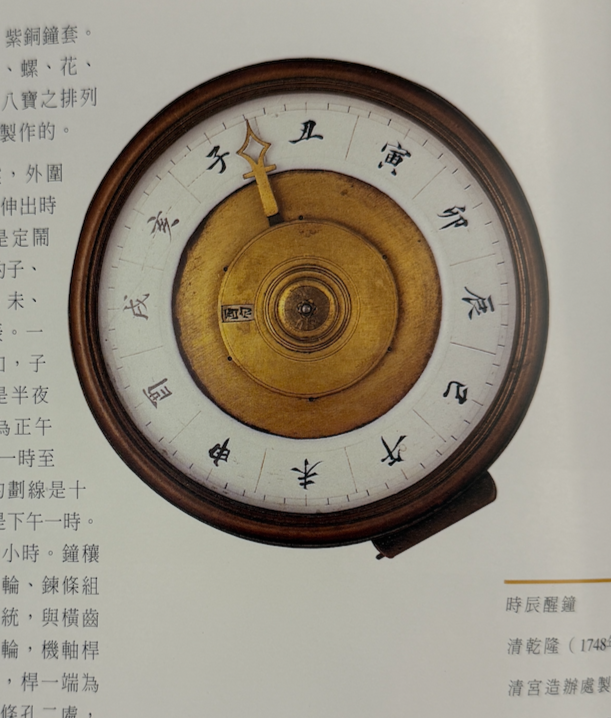
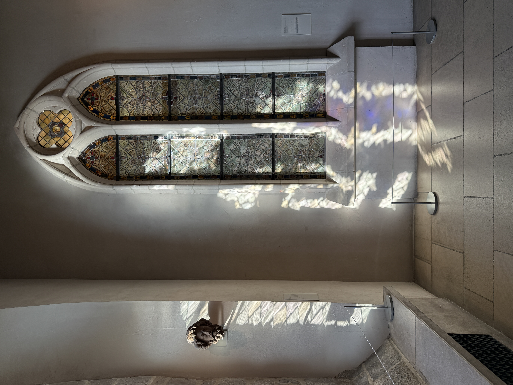
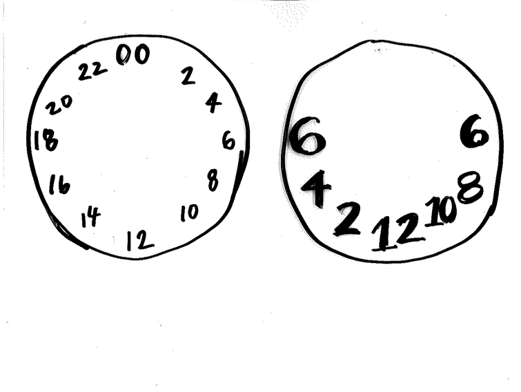
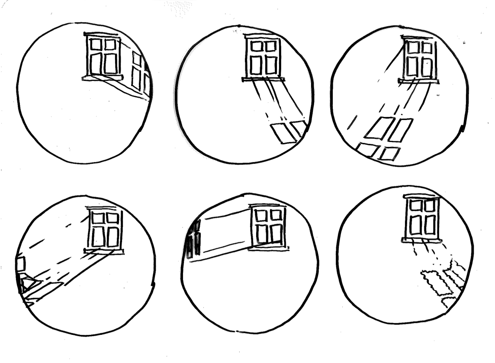
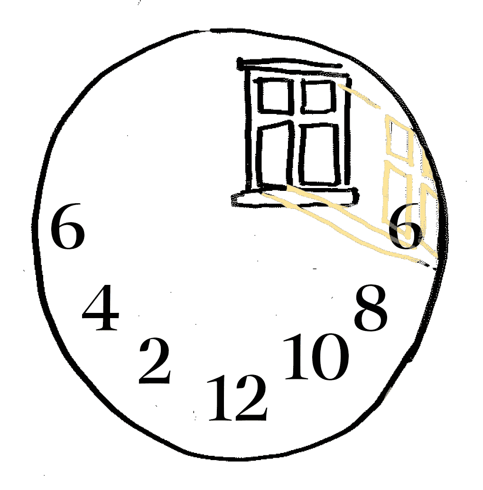

Q: What will you make for the final?
For my final project, I am collaborating with Devan and document how others understand, experience, and
organize time.
Through our brainstorming process, we a few points that lay within our interest venn diagram:
- pen to paper - writing, paper engineering - analog methods of documentation
- the organization of time - calendars, hourly timelines - planners
Our methodology:
- Conduct interviews and/or collect responses to creative prompts about units of time (seconds, minutes, hours, years, seasons, etc...)
- Sort and synthesize the responses for common threads and creative inspiration for our final objects
- Design and fabricate an interactive physical book and/or box set of small books to visualize our findings
Inspiration:
Alphabet in Motion by Kelli
Anderson
Dear Data by Giorgia Lupi and Stefanie
Posavec
The Hobonichi How
It's Used
Recap of the last 5 weeks
My assignment this week is a bit deviated from the original prompt. I did not realize until I had
finished my making assignment.
This clock I was inspired by is from a book documenting the archived clock collection from the
Forbidden City in China. Instead of the normal 12 hour clock face that requires 2 revolutions to
complete a day cycle, this clock face showcases 24 hours in one revolution. The unique thing about the
clock face is that it features the traditional chinese timekeeping characters - "时辰" -, rather than the
common Roman numerals, which divides the day into 12 segments.
When I say I drew inspiration, I mean that I did not follow the prompt to reproduce the clock face. I
experimented with the structure and changed the chinese characters out for Arabic numerals. Either way
it was a lovely exercise to experiment with alternative clockfaces, which lead to the final design
later.
The complication I add it is a day/night indicator. This weekend, I went to the cloisters with a couple
of classmates and really enjoyed slowing down for a few hours and appreciating the grandness of old
architecture and nature. I was especially in awe of the stained glass/painted glass windows, taking
advantage of the beautiful natural light throughout the day to illuminate the illustrations and color
work.




The clock face I ended up designing utilizes the position of the light shining through the window as the indicator of time. This meant that the range that the "hands" could reach was limited by the window position. However, I quickly realized this was not an issue, because if I could simply redistribute the 12 hour markings to the bottom half of the clock face to stay within range. This does pose a question of how accurate and how exact should the time keeping be on the clock? Perhaps a little vagueness is okay. There was a time when clocks were not as accessible or precise, and people still got by. Maybe this is a tool to consider slowing down with?
